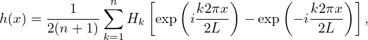

![N∑−1 [ 2π ]
exp iN--n(j − J) = N δjJ,
n=0](fourier_analysis83x.png)
In order to solve the linear algebraic equations (64) for hj, multiply both sides of each equation by exp, where J is an integer between [0,N − 1], and then add all the equations together, which yields
|
| (79) |
Interchanging the sequence of the two summation on the right-hand side, equation (79) is written
|
| (80) |
Using the fact that (verified by Wolfram Mathematica)
|
| (81) |
where δjJ is the Kroneker Delta, equation (80) is written
 | (82) |
i.e.,
 | (83) |
which can be solved to give
 | (84) |
Equation (84) is the inverse DFT.